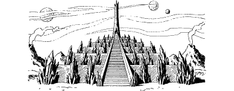

239
Before your disbelieving eyes there spreads a vast volcanic landscape, punctuated by mountainous dunes of blue-grey sand and columns of towering rock. The amber sky is mottled and banded, like the eye of an angry tiger, and within its fathomless reaches you count twelve multi-coloured moons. These glowing spheres cast their light upon the burnt and crusty soil, lending it a ghostly aspect. Thick clouds, black and turgid, swollen with humid vapours, rear up like shadowy castles upon the far horizon. You can feel coarse grains of sand in the stinging crosswinds, and your senses warn that a storm is fast approaching.
Seeking safer shelter from the coming storm, you get to your feet and cast your eyes across this warm yet unwelcoming land. Away to your right, lying less than a mile distant within a shallow basin of age-worn rock, you see a monstrous temple crafted from opaque black glass. Spikes of crystal embellish its many tiers, and atop its highest level there stands a tower, tall and sleek.
{kind=link}

A square of yellow light marks an open portal at the tower’s base. You glimpse something standing in the doorway and, when you magnify your vision, you see that it is a cloaked warrior silhouetted against the portal’s fiery glow. Your pulse quickens the instant you recognize the warrior. It is your accursed adversary—Wolf’s Bane.
The compelling urge to move northwards, that you felt shortly after you broke free from the plant stem, returns to haunt your senses. You feel drawn towards the temple as if you are being summoned by a force beyond this world. Your Sixth Sense screams danger, and every fibre of your being knows it should resist, but you suppress these natural instincts and set off towards the temple. This towering edifice holds many dangers, of that you are in no doubt, yet bravely you resolve to confront and overcome them. Only by doing so can you hope to triumph over your enemy and find a way back to your home world of Magnamund.
During your difficult trek to the temple, unless you possess the Discipline of Grand Huntmastery you must eat a Meal or lose 3 ENDURANCE points.
To continue, turn to 251.